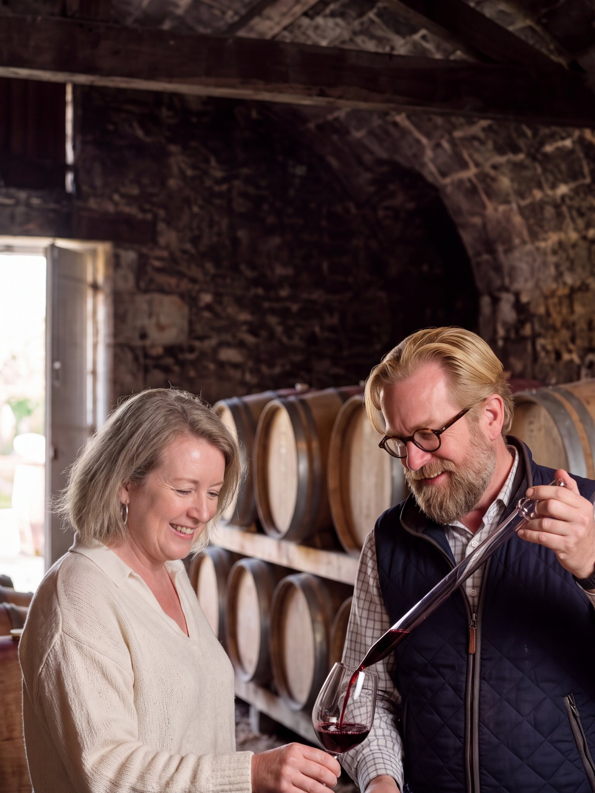
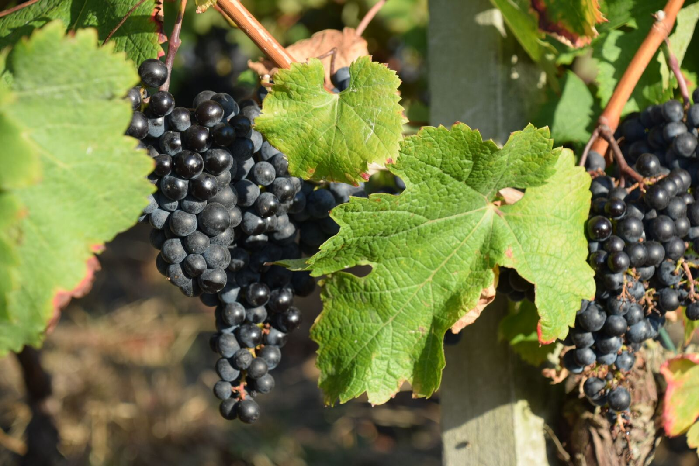
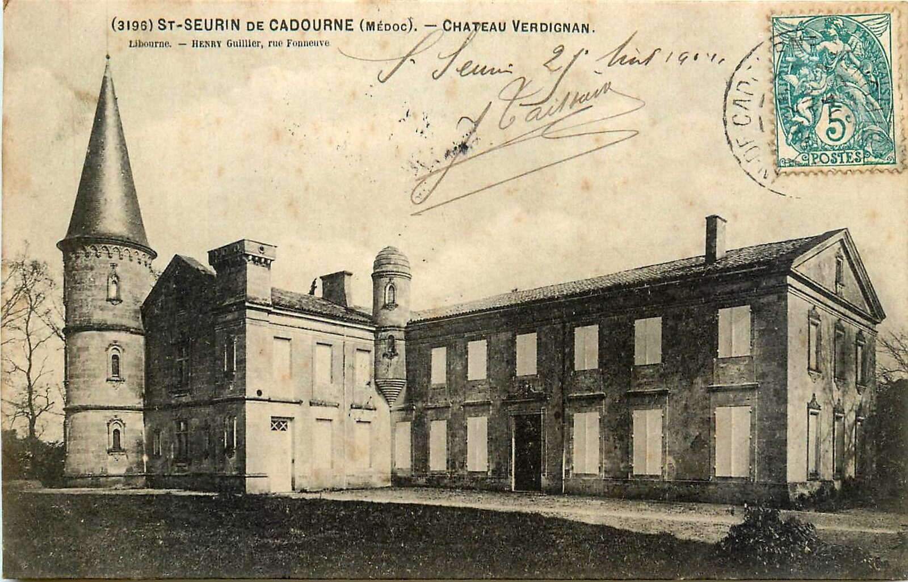
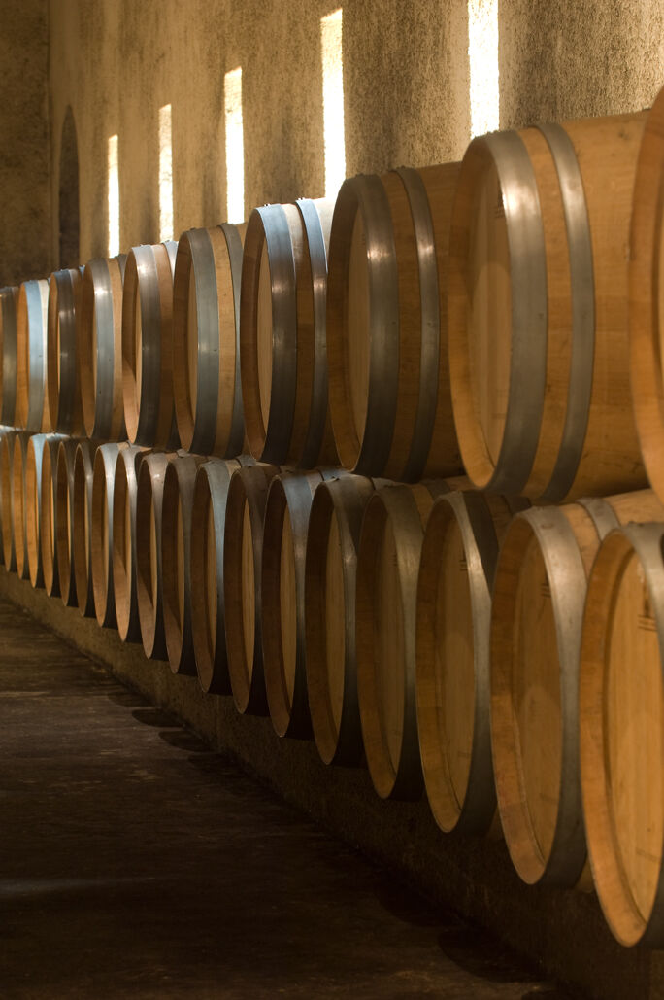
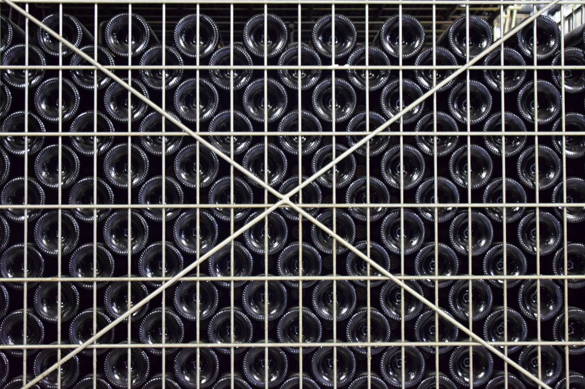
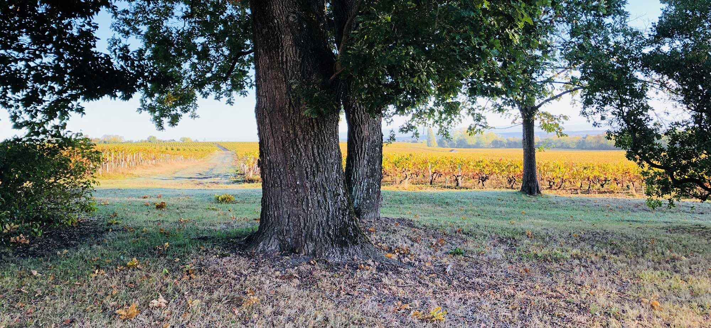
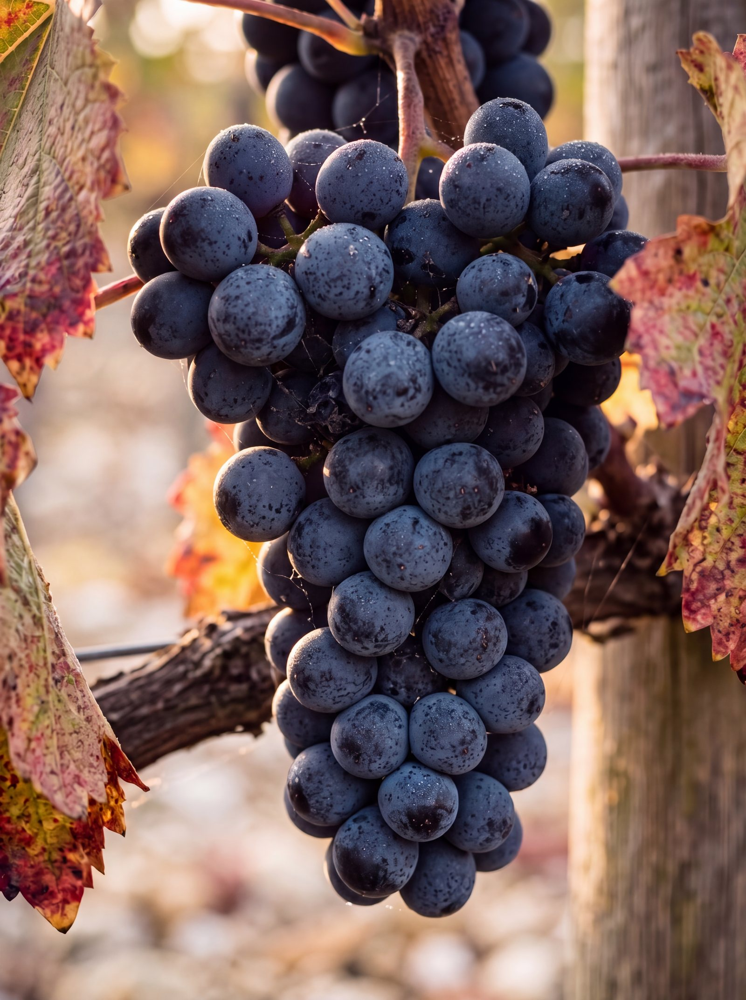
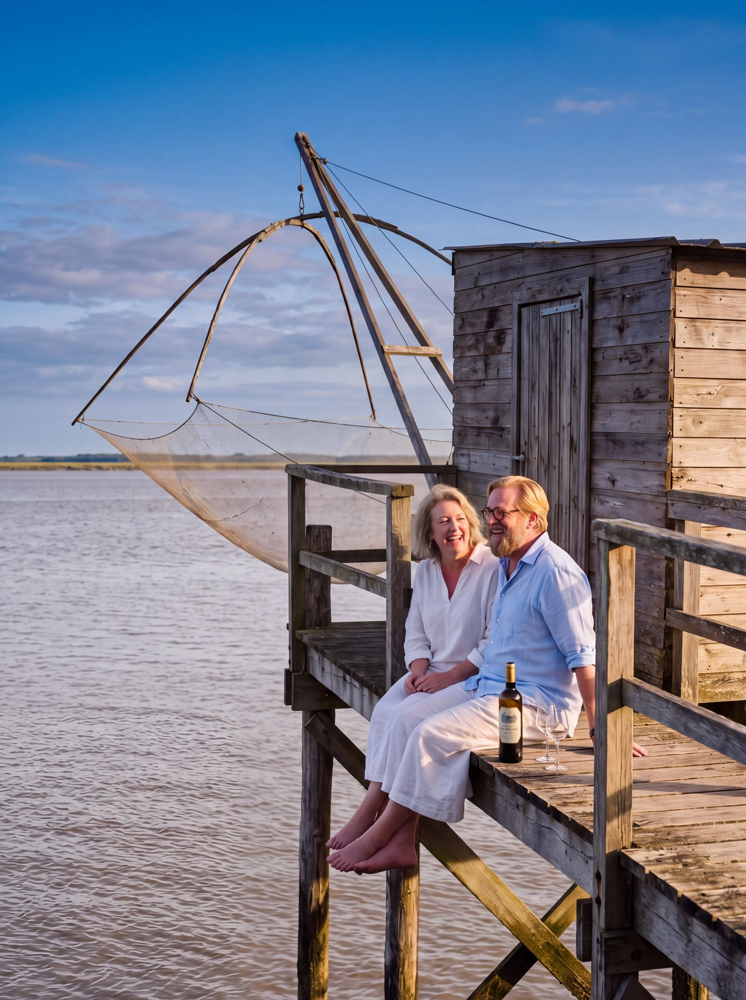
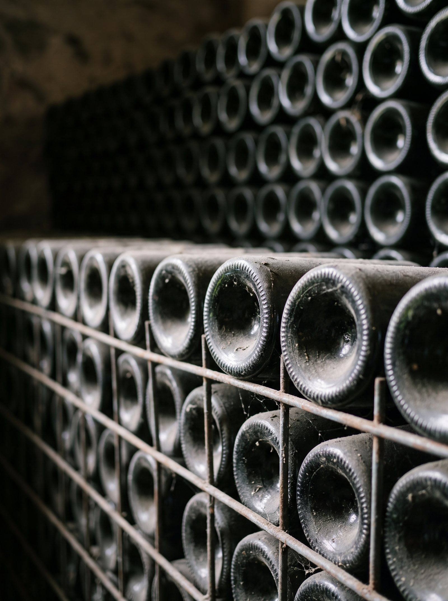

L'histoire
du père
Jean, 1976, le gardien
Verdignan est l'une des plus anciennes propriétés viticoles du canton de Pauillac, et sans doute la plus ancienne de Saint-Seurin-de-Cadourne. Tout près se dressait l'abbaye de Cadourne, halte des pèlerins de Compostelle ; au petit port de La Maréchale, les gabarres chargeaient les barriques pour Bordeaux. La même famille garde le domaine de la fin du XVIIIe siècle jusqu'en 1934.
En 1976, Jean Miailhe, le fils de Louis, achète ce voisin de Coufran. Il vient d'arrêter le courtage : il sera le dernier courtier de la famille, et le premier à garder ses vins comme on garde une tradition.








Les grands terroirs regardent l'eau
Soixante hectares face à l'estuaire de la Gironde, à la frontière de Saint-Estèphe. Autour du château, quarante hectares de graves et d'argiles portent les vieux cabernets ; plus loin, vingt hectares de jeunes vignes sur argilo-calcaire. L'eau tempère le climat, les graves drainent et réchauffent les racines.

Jean l'a choisi, Éric l'a élevé, Lovely le transmettra
Le vin de garde de la famille demande de la patience, et la patience se transmet. Depuis les années 1980, Éric Miailhe, le fils de Jean, veille sur Verdignan avec sa sœur Marie-Cécile Vicaire. Depuis 2006, sa fille Lovely est à ses côtés.
Comme à Coufran, les bouteilles attendent au château que le vin soit prêt. Verdignan ne sort jamais avant son heure.
- Louis1924
- Jean1976
- Éric1980
- Lovely2006
Le vigneron :
Éric Miailhe
Œnologue-conseil : Éric Boissenot

Découvrez
nos vins